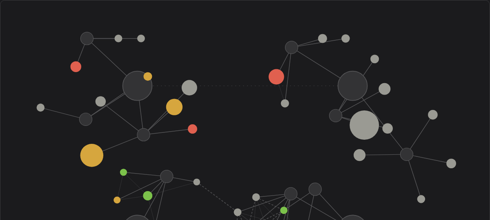

Demand Telescope
in useAn instrument for deciding what to build next. Search demand becomes a sky you can fly through: every query a star, its size the monthly volume, its colour how crowded that door already is.


A public cut of the sky: the landscape shown without the instrument behind it.
How it works
Every query the instrument has ever looked at stays as a node. Size is monthly volume; colour is how occupied that door already is; edges are relations found in the data.
Positions are not decided by hand and not simulated in the browser. The layout is computed offline from the relations themselves, so a sky of fifteen hundred nodes stays smooth to fly through, with detail appearing as you descend.
Regions are the questions that were asked, not properties of the data — which is why every run, on any topic, pours into one sky rather than into a folder of separate maps.
Decisions
A niche is the question, not a property of the data
Every key used to carry the niche it had been collected under, and the layout leaned on that. But the same query turns up in two different runs asked under two different questions, and it cannot belong to both. The niche was pulled out of the layout entirely: it is the frame of a run, not a fact about the key. Positions now come only from relations inside the data.
Nothing is drawn that the map cannot define
Marks had crept onto the map — small stars and ticks — that meant something only to whoever put them there. They were removed. The rule since: every mark carries a meaning defined in the map's own dictionary, or it does not get drawn at all.
A finished layer was deleted the evening it was finished
A layer grouping regions into themes was built, worked, and looked good on screen. It came off the same evening: it introduced a new kind of entity to answer a question the map could already answer. The older rule won — do not multiply entities to decorate a view.
Every run goes onto the sky, whatever it concluded
It is tempting to keep only the runs that found something worth building. The sky would then be a landscape made of wins, and useless for judging the next idea against. So every run is poured in regardless of its verdict: the sky is the landscape, and a verdict is one cut through it.